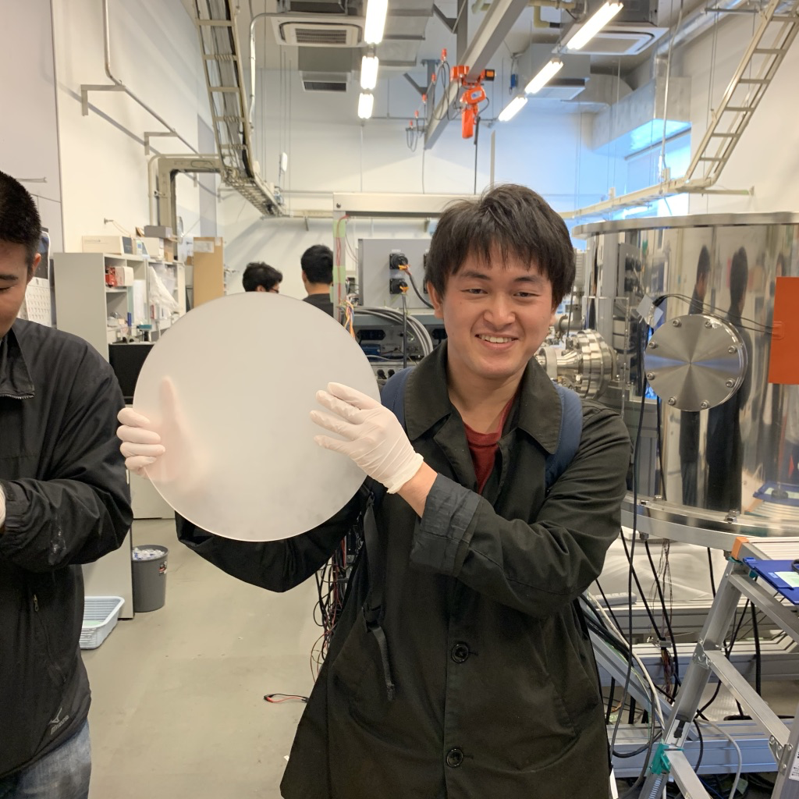

About

2022 - 2023: Japan Society for the Promotion of Science (JSPS) DC2 (JAXA/ISAS)
2018 - 2023: Ph.D cource of Department of Physics, Graduate School of Science, The University of Tokyo (UTokyo)
2013 - 2018: Physics and Applied Physics Program in the Department of Mathematics, Physics, Electrical Engineering and Computer Science, School of Engineering Science, Yokohama National University (YNU)
Contact: takaku_at_ac.jaxa.jp
Ryota Takaku
2023 - present: Japan Society for the Promotion of Science (JSPS) Posdoc (Kavli IPMU)2022 - 2023: Japan Society for the Promotion of Science (JSPS) DC2 (JAXA/ISAS)
2018 - 2023: Ph.D cource of Department of Physics, Graduate School of Science, The University of Tokyo (UTokyo)
2013 - 2018: Physics and Applied Physics Program in the Department of Mathematics, Physics, Electrical Engineering and Computer Science, School of Engineering Science, Yokohama National University (YNU)
Contact: takaku_at_ac.jaxa.jp
Research topics
Overview
I have dedicated my research life to the development of instruments for cosmological observation, in particular LitBIRD, the JAXA-led next generation satellite mission to probe the cosmic inflation theory by the polarization of the cosmic microwave background (CMB).
The key milestones for optical elements for the next CMB polarization telescopes are:
- Thousands to tens of thousands of detectors: ~ 500 mm (a large) diameter
- Reduction of thermal radiation: Operation at a cryogenic temperature
- Distinguish between CMB and foregrounds: broadband operation, between ~ 30 and ~ 400 GHz
Sapphire, silicon, and alumina are attractive materials for optical elements at millimeter and sub-millimeter wavelength because of high thermal conductivity, low loss tangent and high refractive index (~3) giving more aberration correction power per unit lens thickness. This also gives ~ 40% reflection which loses the sensitivity and causes high systematic effects. Stacking thin layer coationgs with different materials is a typical anti-reflection (AR) technology, however it has a few difficulties, delamination issue at a cryogenic temperature, limited bandwidth because of limited selection of coating materials and number of layers. One of alternative ways to solve these problems is a pyramidal structures on an optical element itself, which calles as sub-wavelength structures (SWS) or moth-eye structures because this idea comes from the biomimetic approach. Interestingly the surface of moth eyes is covered by nano-scale pyramidal structures. It can prevent enemy from finding by reflecting the light on its eyes. The principle is when a wavelength is greaterthan the structure pitch, the effective refractive index of moth-eye gradually increase with depth, so we can reduce the index gap between air and optical material. By applying this to the optical elements, there is no need to consider the delamination issue and selections of the coating materials, then this is robust technique particularly at a cryogenic temperature. One of methods to machine moth-eye structures is laser ablation, which has been developed in the recent decade. This method can machine even a hard material such as sapphire, silicon and alumina, no need to replace the saw when we use the dicing to machine moth-eye structures, and broader ARC performance due to flexible fabrication parameters and achieve a smooth taper. Even though the laser ablation technology is attractive for moth-eye structures, it has not been developed yet, and has a lot of difficulties, such as
- It requires the depth of ~ 2 mm with the pitch of ~ 0.5 mm, is it possible with laser ablation?
- Is it possible to make structures which shape is the best as AR coating?
- Is it possible to cover microscale structures over a hundred millimeter scale diameter in a practical timescale?
...
My research is to develop this technology to be applied for the next cosmological observations, and contribute on the next science output.
- Thousands to tens of thousands of detectors: ~ 500 mm (a large) diameter
- Reduction of thermal radiation: Operation at a cryogenic temperature
- Distinguish between CMB and foregrounds: broadband operation, between ~ 30 and ~ 400 GHz
Sapphire, silicon, and alumina are attractive materials for optical elements at millimeter and sub-millimeter wavelength because of high thermal conductivity, low loss tangent and high refractive index (~3) giving more aberration correction power per unit lens thickness. This also gives ~ 40% reflection which loses the sensitivity and causes high systematic effects. Stacking thin layer coationgs with different materials is a typical anti-reflection (AR) technology, however it has a few difficulties, delamination issue at a cryogenic temperature, limited bandwidth because of limited selection of coating materials and number of layers. One of alternative ways to solve these problems is a pyramidal structures on an optical element itself, which calles as sub-wavelength structures (SWS) or moth-eye structures because this idea comes from the biomimetic approach. Interestingly the surface of moth eyes is covered by nano-scale pyramidal structures. It can prevent enemy from finding by reflecting the light on its eyes. The principle is when a wavelength is greaterthan the structure pitch, the effective refractive index of moth-eye gradually increase with depth, so we can reduce the index gap between air and optical material. By applying this to the optical elements, there is no need to consider the delamination issue and selections of the coating materials, then this is robust technique particularly at a cryogenic temperature. One of methods to machine moth-eye structures is laser ablation, which has been developed in the recent decade. This method can machine even a hard material such as sapphire, silicon and alumina, no need to replace the saw when we use the dicing to machine moth-eye structures, and broader ARC performance due to flexible fabrication parameters and achieve a smooth taper. Even though the laser ablation technology is attractive for moth-eye structures, it has not been developed yet, and has a lot of difficulties, such as
- It requires the depth of ~ 2 mm with the pitch of ~ 0.5 mm, is it possible with laser ablation?
- Is it possible to make structures which shape is the best as AR coating?
- Is it possible to cover microscale structures over a hundred millimeter scale diameter in a practical timescale?
...
My research is to develop this technology to be applied for the next cosmological observations, and contribute on the next science output.